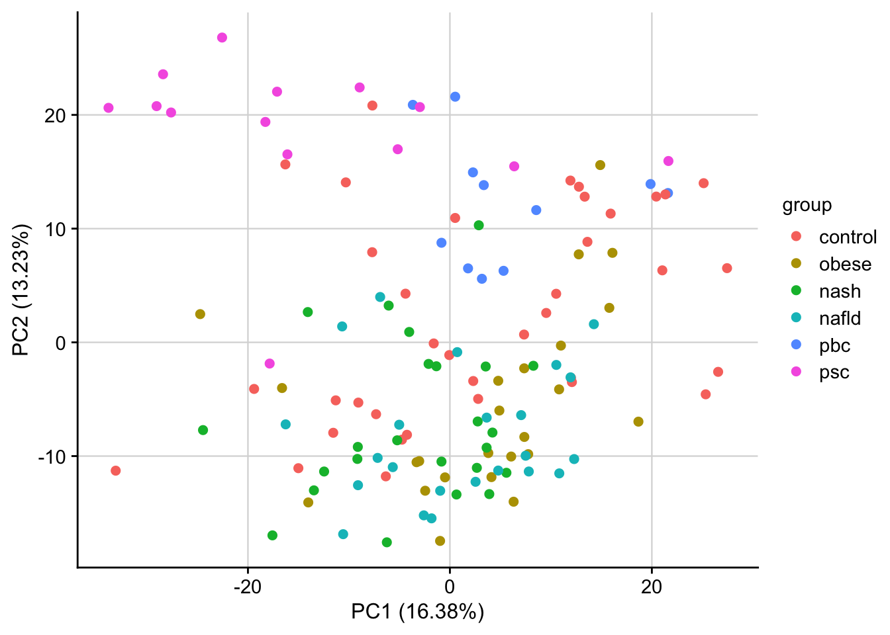

Liver disease patient cohort by Hampe et al. 2014
Last updated: 2021-03-29
Checks: 7 0
Knit directory: liver-disease-atlas/
This reproducible R Markdown analysis was created with workflowr (version 1.6.2). The Checks tab describes the reproducibility checks that were applied when the results were created. The Past versions tab lists the development history.
Great! Since the R Markdown file has been committed to the Git repository, you know the exact version of the code that produced these results.
Great job! The global environment was empty. Objects defined in the global environment can affect the analysis in your R Markdown file in unknown ways. For reproduciblity it’s best to always run the code in an empty environment.
The command set.seed(20201218) was run prior to running the code in the R Markdown file. Setting a seed ensures that any results that rely on randomness, e.g. subsampling or permutations, are reproducible.
Great job! Recording the operating system, R version, and package versions is critical for reproducibility.
Nice! There were no cached chunks for this analysis, so you can be confident that you successfully produced the results during this run.
Great job! Using relative paths to the files within your workflowr project makes it easier to run your code on other machines.
Great! You are using Git for version control. Tracking code development and connecting the code version to the results is critical for reproducibility.
The results in this page were generated with repository version 486340c. See the Past versions tab to see a history of the changes made to the R Markdown and HTML files.
Note that you need to be careful to ensure that all relevant files for the analysis have been committed to Git prior to generating the results (you can use wflow_publish or wflow_git_commit). workflowr only checks the R Markdown file, but you know if there are other scripts or data files that it depends on. Below is the status of the Git repository when the results were generated:
Ignored files:
Ignored: .DS_Store
Ignored: .Rhistory
Ignored: .Rproj.user/
Ignored: analysis/01-mouse-chronic-ccl4_cache/
Ignored: analysis/02-mouse-acute-apap_cache/
Ignored: analysis/03-mouse-acute-ccl4_cache/
Ignored: analysis/04-mouse-acute-ph_cache/
Ignored: analysis/05-mouse-acute-bdl_cache/
Ignored: analysis/06-mouse-acute-lps_cache/
Ignored: analysis/07-mouse-acute-tunicamycin_cache/
Ignored: analysis/08-human-diehl-nafld_cache/
Ignored: analysis/09-human-hampe13-nash_cache/
Ignored: analysis/11-human-hoang-nafld_cache/
Ignored: analysis/12-human-ramnath-fibrosis_cache/
Ignored: analysis/13-meta-chronic-vs-acute_cache/
Ignored: analysis/14-meta-mouse-vs-human_cache/
Ignored: analysis/15-plot-chronic-ccl4_cache/
Ignored: analysis/16-plot-acute-apap_cache/
Ignored: analysis/17-plot-acute-ccl4_cache/
Ignored: analysis/18-plot-acute-ph_cache/
Ignored: analysis/19-plot-acute-bdl_cache/
Ignored: analysis/20-plot-study-overview_cache/
Ignored: analysis/21-plot-chronic-vs-acute_cache/
Ignored: analysis/22-plot-mouse-vs-human_cache/
Ignored: analysis/23-plot-precision-recall_cache/
Ignored: analysis/24-save-tables_cache/
Ignored: code/.DS_Store
Ignored: code/README.html
Ignored: code/meta-mouse-vs-human/.DS_Store
Ignored: data.zip
Ignored: data/.DS_Store
Ignored: data/Icon
Ignored: data/annotation/
Ignored: data/human-diehl-nafld/
Ignored: data/human-hampe13-nash/
Ignored: data/human-hampe14-misc/
Ignored: data/human-hoang-nafld/
Ignored: data/human-ramnath-fibrosis/
Ignored: data/meta-chronic-vs-acute/
Ignored: data/meta-mouse-vs-human/
Ignored: data/mouse-acute-apap/
Ignored: data/mouse-acute-bdl/
Ignored: data/mouse-acute-ccl4/
Ignored: data/mouse-acute-lps/
Ignored: data/mouse-acute-ph/
Ignored: data/mouse-acute-tunicamycin/
Ignored: data/mouse-chronic-ccl4/
Ignored: external_software/.DS_Store
Ignored: external_software/README.html
Ignored: external_software/stem/.DS_Store
Ignored: figures/.DS_Store
Ignored: figures/Figure 1 (partial).pdf
Ignored: figures/Figure 1.pdf
Ignored: figures/Figure 1.png
Ignored: figures/Figure 2 (partial).pdf
Ignored: figures/Figure 2.pdf
Ignored: figures/Figure 2.png
Ignored: figures/Figure 3.pdf
Ignored: figures/Figure 3.png
Ignored: figures/Figure 4.pdf
Ignored: figures/Figure 4.png
Ignored: figures/Figure 5.pdf
Ignored: figures/Figure 6.png
Ignored: figures/Icon
Ignored: figures/Supplementary Figure 0.1.pdf
Ignored: figures/Supplementary Figure 0.1.png
Ignored: figures/Supplementary Figure 1.1.pdf
Ignored: figures/Supplementary Figure 1.1.png
Ignored: figures/Supplementary Figure 2.1.pdf
Ignored: figures/Supplementary Figure 2.1.png
Ignored: figures/Supplementary Figure 2.2.pdf
Ignored: figures/Supplementary Figure 2.2.png
Ignored: figures/Supplementary Figure 2.3.pdf
Ignored: figures/Supplementary Figure 2.3.png
Ignored: figures/Supplementary Figure 2.4.pdf
Ignored: figures/Supplementary Figure 2.4.png
Ignored: figures/Supplementary Figure 2.5.pdf
Ignored: figures/Supplementary Figure 2.5.png
Ignored: figures/Supplementary Figure 2.6.pdf
Ignored: figures/Supplementary Figure 2.6.png
Ignored: figures/Supplementary Figure 2.7.pdf
Ignored: figures/Supplementary Figure 2.7.png
Ignored: figures/Supplementary Figure 3.1.pdf
Ignored: figures/Supplementary Figure 3.1.png
Ignored: figures/Supplementary Figure 3.2.pdf
Ignored: figures/Supplementary Figure 3.2.png
Ignored: figures/Supplementary Figure 3.3.pdf
Ignored: figures/Supplementary Figure 3.3.png
Ignored: figures/Supplementary Figure 3.4.pdf
Ignored: figures/Supplementary Figure 3.4.png
Ignored: figures/Supplementary Figure 4.1.pdf
Ignored: figures/Supplementary Figure 4.1.png
Ignored: figures/Supplementary Figure 4.2.pdf
Ignored: figures/Supplementary Figure 4.2.png
Ignored: figures/Supplementary Figure 5.1.pdf
Ignored: figures/Supplementary Figure 5.1.png
Ignored: figures/figures.key
Ignored: figures/histologies.key
Ignored: figures/panels/
Ignored: figures/tmp/.DS_Store
Ignored: figures/tmp/Fig5A1.pdf
Ignored: figures/tmp/Fig5A2.pdf
Ignored: figures/tmp/Icon
Ignored: geo_submission/
Ignored: output/.DS_Store
Ignored: output/Icon
Ignored: output/README.html
Ignored: output/human-diehl-nafld/Icon
Ignored: output/human-diehl-nafld/limma_result.rds
Ignored: output/human-diehl-nafld/meta_data.rds
Ignored: output/human-diehl-nafld/normalized_expression.rds
Ignored: output/human-diehl-nafld/pca_result.rds
Ignored: output/human-diehl-nafld/z_scores.rds
Ignored: output/human-hampe13-nash/Icon
Ignored: output/human-hampe13-nash/limma_result.rds
Ignored: output/human-hampe13-nash/meta_data.rds
Ignored: output/human-hampe13-nash/normalized_expression.rds
Ignored: output/human-hampe13-nash/pca_result.rds
Ignored: output/human-hampe13-nash/z_scores.rds
Ignored: output/human-hampe14-misc/Icon
Ignored: output/human-hampe14-misc/limma_result.rds
Ignored: output/human-hampe14-misc/meta_data.rds
Ignored: output/human-hampe14-misc/normalized_expression.rds
Ignored: output/human-hampe14-misc/pca_result.rds
Ignored: output/human-hampe14-misc/z_scores.rds
Ignored: output/human-hoang-nafld/Icon
Ignored: output/human-hoang-nafld/limma_result.rds
Ignored: output/human-hoang-nafld/normalized_expression.rds
Ignored: output/human-hoang-nafld/pca_result.rds
Ignored: output/human-hoang-nafld/z_scores.rds
Ignored: output/human-ramnath-fibrosis/Icon
Ignored: output/human-ramnath-fibrosis/limma_result.rds
Ignored: output/human-ramnath-fibrosis/normalized_expression.rds
Ignored: output/human-ramnath-fibrosis/pca_result.rds
Ignored: output/human-ramnath-fibrosis/z_scores.rds
Ignored: output/meta-chronic-vs-acute/Icon
Ignored: output/meta-chronic-vs-acute/acute_gene_pool.rds
Ignored: output/meta-chronic-vs-acute/chronic_gene_pool.rds
Ignored: output/meta-chronic-vs-acute/exclusive_genes_characterization.rds
Ignored: output/meta-chronic-vs-acute/gene_membership.rds
Ignored: output/meta-chronic-vs-acute/gene_set_similarity.rds
Ignored: output/meta-chronic-vs-acute/go_cluster_ranking.rds
Ignored: output/meta-chronic-vs-acute/go_wordcounts.rds
Ignored: output/meta-chronic-vs-acute/interstudy_enrichment.rds
Ignored: output/meta-chronic-vs-acute/limma_result.rds
Ignored: output/meta-chronic-vs-acute/meta_data.rds
Ignored: output/meta-chronic-vs-acute/pca_dist.rds
Ignored: output/meta-chronic-vs-acute/ranked_common_genes.rds
Ignored: output/meta-chronic-vs-acute/ranked_exclusive_acute_genes.rds
Ignored: output/meta-chronic-vs-acute/ranked_exclusive_chronic_genes.rds
Ignored: output/meta-chronic-vs-acute/union_acute_geneset.rds
Ignored: output/meta-chronic-vs-acute/union_chronic_geneset.rds
Ignored: output/meta-mouse-vs-human/Icon
Ignored: output/meta-mouse-vs-human/chronic_mouse_deg_numbers.rds
Ignored: output/meta-mouse-vs-human/consistent_genes.rds
Ignored: output/meta-mouse-vs-human/cross_species_enrichment.rds
Ignored: output/meta-mouse-vs-human/cross_species_similarity.rds
Ignored: output/meta-mouse-vs-human/etiology_gene_sets.rds
Ignored: output/meta-mouse-vs-human/gene_set_similarity.rds
Ignored: output/meta-mouse-vs-human/go_cluster_ranking.rds
Ignored: output/meta-mouse-vs-human/go_wordcounts.rds
Ignored: output/meta-mouse-vs-human/gsea_res.rds
Ignored: output/meta-mouse-vs-human/individual_le.rds
Ignored: output/meta-mouse-vs-human/interstudy_enrichment.rds
Ignored: output/meta-mouse-vs-human/leading_edges.rds
Ignored: output/meta-mouse-vs-human/leading_edges_characterization.rds
Ignored: output/meta-mouse-vs-human/leading_edges_mgi.rds
Ignored: output/meta-mouse-vs-human/limma_result.rds
Ignored: output/meta-mouse-vs-human/meta_data.rds
Ignored: output/meta-mouse-vs-human/precision_recall.rds
Ignored: output/meta-mouse-vs-human/precision_recall_chronicity.rds
Ignored: output/meta-mouse-vs-human/teufel_genes.rds
Ignored: output/meta-mouse-vs-human/teufel_genes_hs.rds
Ignored: output/meta-mouse-vs-human/z_score_pca.rds
Ignored: output/mouse-acute-apap/.DS_Store
Ignored: output/mouse-acute-apap/Icon
Ignored: output/mouse-acute-apap/limma_result.rds
Ignored: output/mouse-acute-apap/meta_data.rds
Ignored: output/mouse-acute-apap/normalized_expression.rds
Ignored: output/mouse-acute-apap/pca_result.rds
Ignored: output/mouse-acute-apap/stem/.DS_Store
Ignored: output/mouse-acute-apap/stem/Icon
Ignored: output/mouse-acute-apap/stem/input/Icon
Ignored: output/mouse-acute-apap/stem/input/apap.txt
Ignored: output/mouse-acute-apap/stem_characterization.rds
Ignored: output/mouse-acute-apap/stem_result.rds
Ignored: output/mouse-acute-apap/z_scores.rds
Ignored: output/mouse-acute-bdl/.DS_Store
Ignored: output/mouse-acute-bdl/Icon
Ignored: output/mouse-acute-bdl/limma_result.rds
Ignored: output/mouse-acute-bdl/meta_data.rds
Ignored: output/mouse-acute-bdl/normalized_expression.rds
Ignored: output/mouse-acute-bdl/pca_result.rds
Ignored: output/mouse-acute-bdl/stem/.DS_Store
Ignored: output/mouse-acute-bdl/stem/Icon
Ignored: output/mouse-acute-bdl/stem/input/Icon
Ignored: output/mouse-acute-bdl/stem/input/bdl.txt
Ignored: output/mouse-acute-bdl/stem_characterization.rds
Ignored: output/mouse-acute-bdl/stem_result.rds
Ignored: output/mouse-acute-bdl/z_scores.rds
Ignored: output/mouse-acute-ccl4/.DS_Store
Ignored: output/mouse-acute-ccl4/Icon
Ignored: output/mouse-acute-ccl4/limma_result.rds
Ignored: output/mouse-acute-ccl4/meta_data.rds
Ignored: output/mouse-acute-ccl4/normalized_expression.rds
Ignored: output/mouse-acute-ccl4/pca_result.rds
Ignored: output/mouse-acute-ccl4/stem/.DS_Store
Ignored: output/mouse-acute-ccl4/stem/Icon
Ignored: output/mouse-acute-ccl4/stem/input/Icon
Ignored: output/mouse-acute-ccl4/stem/input/ccl4.txt
Ignored: output/mouse-acute-ccl4/stem_characterization.rds
Ignored: output/mouse-acute-ccl4/stem_result.rds
Ignored: output/mouse-acute-ccl4/z_scores.rds
Ignored: output/mouse-acute-lps/Icon
Ignored: output/mouse-acute-lps/limma_result.rds
Ignored: output/mouse-acute-lps/meta_data.rds
Ignored: output/mouse-acute-lps/normalized_expression.rds
Ignored: output/mouse-acute-lps/pca_result.rds
Ignored: output/mouse-acute-lps/z_scores.rds
Ignored: output/mouse-acute-ph/.DS_Store
Ignored: output/mouse-acute-ph/Icon
Ignored: output/mouse-acute-ph/limma_result.rds
Ignored: output/mouse-acute-ph/meta_data.rds
Ignored: output/mouse-acute-ph/normalized_expression.rds
Ignored: output/mouse-acute-ph/pca_result.rds
Ignored: output/mouse-acute-ph/stem/.DS_Store
Ignored: output/mouse-acute-ph/stem/Icon
Ignored: output/mouse-acute-ph/stem/input/Icon
Ignored: output/mouse-acute-ph/stem/input/hepatec.txt
Ignored: output/mouse-acute-ph/stem_characterization.rds
Ignored: output/mouse-acute-ph/stem_result.rds
Ignored: output/mouse-acute-ph/z_scores.rds
Ignored: output/mouse-acute-tunicamycin/Icon
Ignored: output/mouse-acute-tunicamycin/limma_result.rds
Ignored: output/mouse-acute-tunicamycin/meta_data.rds
Ignored: output/mouse-acute-tunicamycin/normalized_expression.rds
Ignored: output/mouse-acute-tunicamycin/pca_result.rds
Ignored: output/mouse-acute-tunicamycin/z_scores.rds
Ignored: output/mouse-chronic-ccl4/.DS_Store
Ignored: output/mouse-chronic-ccl4/Icon
Ignored: output/mouse-chronic-ccl4/limma_result.rds
Ignored: output/mouse-chronic-ccl4/limma_result_hs.rds
Ignored: output/mouse-chronic-ccl4/normalized_expression.rds
Ignored: output/mouse-chronic-ccl4/pca_result.rds
Ignored: output/mouse-chronic-ccl4/stem/.DS_Store
Ignored: output/mouse-chronic-ccl4/stem/Icon
Ignored: output/mouse-chronic-ccl4/stem/input/Icon
Ignored: output/mouse-chronic-ccl4/stem/input/pure_ccl4.txt
Ignored: output/mouse-chronic-ccl4/stem_characterization.rds
Ignored: output/mouse-chronic-ccl4/stem_result.rds
Ignored: output/mouse-chronic-ccl4/z_scores.rds
Ignored: renv/library/
Ignored: renv/staging/
Ignored: tables/Supplementary Table 1.xlsx
Ignored: tables/Supplementary Table xy consistent_genes.xlsx
Ignored: tables/Supplementary Table xy exclusive_common_genes.xlsx
Ignored: tables/Supplementary Table xy human_degs.xlsx
Ignored: tables/Supplementary Table xy stem_results.xlsx
Note that any generated files, e.g. HTML, png, CSS, etc., are not included in this status report because it is ok for generated content to have uncommitted changes.
These are the previous versions of the repository in which changes were made to the R Markdown (analysis/10-human-hampe14-misc.Rmd) and HTML (docs/10-human-hampe14-misc.html) files. If you’ve configured a remote Git repository (see ?wflow_git_remote), click on the hyperlinks in the table below to view the files as they were in that past version.
| File | Version | Author | Date | Message |
|---|---|---|---|---|
| Rmd | c5a4d0c | christianholland | 2021-03-29 | added pca of z-scores |
| html | 24c0c74 | christianholland | 2021-02-28 | Build site. |
| html | 5e36b25 | christianholland | 2021-02-28 | Build site. |
| Rmd | 7f331d0 | christianholland | 2021-02-28 | wflow_publish("analysis/*", delete_cache = TRUE, republish = TRUE) |
Introduction
Here we analysis a patient cohort covering patients with different etiologies of chronic liver disease generated by Hampe et al. 2014.
Libraries and sources
These libraries and sources are used for this analysis.
library(hugene11sttranscriptcluster.db)
library(tidyverse)
library(tidylog)
library(here)
library(oligo)
library(annotate)
library(GEOquery)
library(limma)
library(biobroom)
library(AachenColorPalette)
library(cowplot)
library(lemon)
options("tidylog.display" = list(print))
source(here("code/utils-microarray.R"))
source(here("code/utils-utils.R"))
source(here("code/utils-plots.R"))Definition of global variables that are used throughout this analysis.
# i/o
data_path <- "data/human-hampe14-misc"
output_path <- "output/human-hampe14-misc"
# graphical parameters
# fontsize
fz <- 9Data processing
Load .CEL files and quality control
The array quality is controlled based on the relative log expression values (RLE) and the normalized unscaled standard errors (NUSE).
# load cel files and check quality
platforms <- readRDS(here("data/annotation/platforms.rds"))
raw_eset <- list.celfiles(here(data_path), listGzipped = T, full.names = T) %>%
read.celfiles() %>%
ma_qc() # Discarding in total 1 arrays: GSM1501017_A1891-04.CEL.gz
#> Loading required package: pd.hugene.1.1.st.v1
#> Loading required package: RSQLite
#> Loading required package: DBI
#> Platform design info loaded.
#> Reading in : /Users/cholland/Google Drive/Projects/liver-disease-atlas/data/human-hampe14-misc/GSM1501013_A1970-01.CEL.gz
#> Reading in : /Users/cholland/Google Drive/Projects/liver-disease-atlas/data/human-hampe14-misc/GSM1501014_A1891-01.CEL.gz
#> Reading in : /Users/cholland/Google Drive/Projects/liver-disease-atlas/data/human-hampe14-misc/GSM1501015_A1891-03.CEL.gz
#> Reading in : /Users/cholland/Google Drive/Projects/liver-disease-atlas/data/human-hampe14-misc/GSM1501016_A1359-01.CEL.gz
#> Reading in : /Users/cholland/Google Drive/Projects/liver-disease-atlas/data/human-hampe14-misc/GSM1501017_A1891-04.CEL.gz
#> Reading in : /Users/cholland/Google Drive/Projects/liver-disease-atlas/data/human-hampe14-misc/GSM1501018_A1970-02.CEL.gz
#> Reading in : /Users/cholland/Google Drive/Projects/liver-disease-atlas/data/human-hampe14-misc/GSM1501019_A1891-05.CEL.gz
#> Reading in : /Users/cholland/Google Drive/Projects/liver-disease-atlas/data/human-hampe14-misc/GSM1501020_A1359-02.CEL.gz
#> Reading in : /Users/cholland/Google Drive/Projects/liver-disease-atlas/data/human-hampe14-misc/GSM1501021_A1891-06.CEL.gz
#> Reading in : /Users/cholland/Google Drive/Projects/liver-disease-atlas/data/human-hampe14-misc/GSM1501022_A1891-07.CEL.gz
#> Reading in : /Users/cholland/Google Drive/Projects/liver-disease-atlas/data/human-hampe14-misc/GSM1501023_A1891-08.CEL.gz
#> Reading in : /Users/cholland/Google Drive/Projects/liver-disease-atlas/data/human-hampe14-misc/GSM1501024_A1359-03.CEL.gz
#> Reading in : /Users/cholland/Google Drive/Projects/liver-disease-atlas/data/human-hampe14-misc/GSM1501025_A1970-04.CEL.gz
#> Reading in : /Users/cholland/Google Drive/Projects/liver-disease-atlas/data/human-hampe14-misc/GSM1501026_A1970-05.CEL.gz
#> Reading in : /Users/cholland/Google Drive/Projects/liver-disease-atlas/data/human-hampe14-misc/GSM1501027_A1970-06.CEL.gz
#> Reading in : /Users/cholland/Google Drive/Projects/liver-disease-atlas/data/human-hampe14-misc/GSM1501028_A1359-04.CEL.gz
#> Reading in : /Users/cholland/Google Drive/Projects/liver-disease-atlas/data/human-hampe14-misc/GSM1501029_A1891-09.CEL.gz
#> Reading in : /Users/cholland/Google Drive/Projects/liver-disease-atlas/data/human-hampe14-misc/GSM1501030_A1970-07.CEL.gz
#> Reading in : /Users/cholland/Google Drive/Projects/liver-disease-atlas/data/human-hampe14-misc/GSM1501031_A1891-10.CEL.gz
#> Reading in : /Users/cholland/Google Drive/Projects/liver-disease-atlas/data/human-hampe14-misc/GSM1501032_A1359-05.CEL.gz
#> Reading in : /Users/cholland/Google Drive/Projects/liver-disease-atlas/data/human-hampe14-misc/GSM1501033_A1970-08.CEL.gz
#> Reading in : /Users/cholland/Google Drive/Projects/liver-disease-atlas/data/human-hampe14-misc/GSM1501034_A1891-11.CEL.gz
#> Reading in : /Users/cholland/Google Drive/Projects/liver-disease-atlas/data/human-hampe14-misc/GSM1501035_A1970-09.CEL.gz
#> Reading in : /Users/cholland/Google Drive/Projects/liver-disease-atlas/data/human-hampe14-misc/GSM1501036_A1970-10.CEL.gz
#> Reading in : /Users/cholland/Google Drive/Projects/liver-disease-atlas/data/human-hampe14-misc/GSM1501037_A1970-11.CEL.gz
#> Reading in : /Users/cholland/Google Drive/Projects/liver-disease-atlas/data/human-hampe14-misc/GSM1501038_A1891-12.CEL.gz
#> Reading in : /Users/cholland/Google Drive/Projects/liver-disease-atlas/data/human-hampe14-misc/GSM1501039_A1970-12.CEL.gz
#> Reading in : /Users/cholland/Google Drive/Projects/liver-disease-atlas/data/human-hampe14-misc/GSM1501040_A1891-13.CEL.gz
#> Reading in : /Users/cholland/Google Drive/Projects/liver-disease-atlas/data/human-hampe14-misc/GSM1501041_A1970-13.CEL.gz
#> Reading in : /Users/cholland/Google Drive/Projects/liver-disease-atlas/data/human-hampe14-misc/GSM1501042_A1359-07.CEL.gz
#> Reading in : /Users/cholland/Google Drive/Projects/liver-disease-atlas/data/human-hampe14-misc/GSM1501043_A1891-14.CEL.gz
#> Reading in : /Users/cholland/Google Drive/Projects/liver-disease-atlas/data/human-hampe14-misc/GSM1501044_A1970-14.CEL.gz
#> Reading in : /Users/cholland/Google Drive/Projects/liver-disease-atlas/data/human-hampe14-misc/GSM1501045_A1359-08.CEL.gz
#> Reading in : /Users/cholland/Google Drive/Projects/liver-disease-atlas/data/human-hampe14-misc/GSM1501046_A1359-09.CEL.gz
#> Reading in : /Users/cholland/Google Drive/Projects/liver-disease-atlas/data/human-hampe14-misc/GSM1501047_A1359-10.CEL.gz
#> Reading in : /Users/cholland/Google Drive/Projects/liver-disease-atlas/data/human-hampe14-misc/GSM1501048_A1970-15.CEL.gz
#> Reading in : /Users/cholland/Google Drive/Projects/liver-disease-atlas/data/human-hampe14-misc/GSM1501049_A1970-16.CEL.gz
#> Reading in : /Users/cholland/Google Drive/Projects/liver-disease-atlas/data/human-hampe14-misc/GSM1501050_A1970-17.CEL.gz
#> Reading in : /Users/cholland/Google Drive/Projects/liver-disease-atlas/data/human-hampe14-misc/GSM1501051_A1970-18.CEL.gz
#> Reading in : /Users/cholland/Google Drive/Projects/liver-disease-atlas/data/human-hampe14-misc/GSM1501052_A1970-19.CEL.gz
#> Reading in : /Users/cholland/Google Drive/Projects/liver-disease-atlas/data/human-hampe14-misc/GSM1501053_A1891-15.CEL.gz
#> Reading in : /Users/cholland/Google Drive/Projects/liver-disease-atlas/data/human-hampe14-misc/GSM1501054_A1359-12.CEL.gz
#> Reading in : /Users/cholland/Google Drive/Projects/liver-disease-atlas/data/human-hampe14-misc/GSM1501055_A1970-20.CEL.gz
#> Reading in : /Users/cholland/Google Drive/Projects/liver-disease-atlas/data/human-hampe14-misc/GSM1501056_A1359-13.CEL.gz
#> Reading in : /Users/cholland/Google Drive/Projects/liver-disease-atlas/data/human-hampe14-misc/GSM1501057_A1359-14.CEL.gz
#> Reading in : /Users/cholland/Google Drive/Projects/liver-disease-atlas/data/human-hampe14-misc/GSM1501058_A1359-15.CEL.gz
#> Reading in : /Users/cholland/Google Drive/Projects/liver-disease-atlas/data/human-hampe14-misc/GSM1501059_A1359-16.CEL.gz
#> Reading in : /Users/cholland/Google Drive/Projects/liver-disease-atlas/data/human-hampe14-misc/GSM1501060_A1359-17.CEL.gz
#> Reading in : /Users/cholland/Google Drive/Projects/liver-disease-atlas/data/human-hampe14-misc/GSM1501061_A1970-21.CEL.gz
#> Reading in : /Users/cholland/Google Drive/Projects/liver-disease-atlas/data/human-hampe14-misc/GSM1501062_A1359-18.CEL.gz
#> Reading in : /Users/cholland/Google Drive/Projects/liver-disease-atlas/data/human-hampe14-misc/GSM1501063_A1891-17.CEL.gz
#> Reading in : /Users/cholland/Google Drive/Projects/liver-disease-atlas/data/human-hampe14-misc/GSM1501064_A1970-23.CEL.gz
#> Reading in : /Users/cholland/Google Drive/Projects/liver-disease-atlas/data/human-hampe14-misc/GSM1501065_A1970-24.CEL.gz
#> Reading in : /Users/cholland/Google Drive/Projects/liver-disease-atlas/data/human-hampe14-misc/GSM1501066_A1970-25.CEL.gz
#> Reading in : /Users/cholland/Google Drive/Projects/liver-disease-atlas/data/human-hampe14-misc/GSM1501067_A1891-18.CEL.gz
#> Reading in : /Users/cholland/Google Drive/Projects/liver-disease-atlas/data/human-hampe14-misc/GSM1501068_A1359-20.CEL.gz
#> Reading in : /Users/cholland/Google Drive/Projects/liver-disease-atlas/data/human-hampe14-misc/GSM1501069_A1359-21.CEL.gz
#> Reading in : /Users/cholland/Google Drive/Projects/liver-disease-atlas/data/human-hampe14-misc/GSM1501070_A1970-26.CEL.gz
#> Reading in : /Users/cholland/Google Drive/Projects/liver-disease-atlas/data/human-hampe14-misc/GSM1501071_A1359-22.CEL.gz
#> Reading in : /Users/cholland/Google Drive/Projects/liver-disease-atlas/data/human-hampe14-misc/GSM1501072_A1359-23.CEL.gz
#> Reading in : /Users/cholland/Google Drive/Projects/liver-disease-atlas/data/human-hampe14-misc/GSM1501073_A1359-24.CEL.gz
#> Reading in : /Users/cholland/Google Drive/Projects/liver-disease-atlas/data/human-hampe14-misc/GSM1501074_A1649-01.CEL.gz
#> Reading in : /Users/cholland/Google Drive/Projects/liver-disease-atlas/data/human-hampe14-misc/GSM1501075_A1359-25.CEL.gz
#> Reading in : /Users/cholland/Google Drive/Projects/liver-disease-atlas/data/human-hampe14-misc/GSM1501076_A1359-26.CEL.gz
#> Reading in : /Users/cholland/Google Drive/Projects/liver-disease-atlas/data/human-hampe14-misc/GSM1501077_A1891-19.CEL.gz
#> Reading in : /Users/cholland/Google Drive/Projects/liver-disease-atlas/data/human-hampe14-misc/GSM1501078_A1891-20.CEL.gz
#> Reading in : /Users/cholland/Google Drive/Projects/liver-disease-atlas/data/human-hampe14-misc/GSM1501079_A1970-28.CEL.gz
#> Reading in : /Users/cholland/Google Drive/Projects/liver-disease-atlas/data/human-hampe14-misc/GSM1501080_A1359-27.CEL.gz
#> Reading in : /Users/cholland/Google Drive/Projects/liver-disease-atlas/data/human-hampe14-misc/GSM1501081_A1359-29.CEL.gz
#> Reading in : /Users/cholland/Google Drive/Projects/liver-disease-atlas/data/human-hampe14-misc/GSM1501082_A1359-30.CEL.gz
#> Reading in : /Users/cholland/Google Drive/Projects/liver-disease-atlas/data/human-hampe14-misc/GSM1501083_A1891-21.CEL.gz
#> Reading in : /Users/cholland/Google Drive/Projects/liver-disease-atlas/data/human-hampe14-misc/GSM1501084_A1359-32.CEL.gz
#> Reading in : /Users/cholland/Google Drive/Projects/liver-disease-atlas/data/human-hampe14-misc/GSM1501085_A1359-33.CEL.gz
#> Reading in : /Users/cholland/Google Drive/Projects/liver-disease-atlas/data/human-hampe14-misc/GSM1501086_A1359-34.CEL.gz
#> Reading in : /Users/cholland/Google Drive/Projects/liver-disease-atlas/data/human-hampe14-misc/GSM1501087_A1359-35.CEL.gz
#> Reading in : /Users/cholland/Google Drive/Projects/liver-disease-atlas/data/human-hampe14-misc/GSM1501088_A1359-36.CEL.gz
#> Reading in : /Users/cholland/Google Drive/Projects/liver-disease-atlas/data/human-hampe14-misc/GSM1501089_A1359-37.CEL.gz
#> Reading in : /Users/cholland/Google Drive/Projects/liver-disease-atlas/data/human-hampe14-misc/GSM1501090_A1359-38.CEL.gz
#> Reading in : /Users/cholland/Google Drive/Projects/liver-disease-atlas/data/human-hampe14-misc/GSM1501091_A1359-39.CEL.gz
#> Reading in : /Users/cholland/Google Drive/Projects/liver-disease-atlas/data/human-hampe14-misc/GSM1501092_A1359-40.CEL.gz
#> Reading in : /Users/cholland/Google Drive/Projects/liver-disease-atlas/data/human-hampe14-misc/GSM1501093_A1891-22.CEL.gz
#> Reading in : /Users/cholland/Google Drive/Projects/liver-disease-atlas/data/human-hampe14-misc/GSM1501094_A1359-41.CEL.gz
#> Reading in : /Users/cholland/Google Drive/Projects/liver-disease-atlas/data/human-hampe14-misc/GSM1501095_A1359-44.CEL.gz
#> Reading in : /Users/cholland/Google Drive/Projects/liver-disease-atlas/data/human-hampe14-misc/GSM1501096_A1359-45.CEL.gz
#> Reading in : /Users/cholland/Google Drive/Projects/liver-disease-atlas/data/human-hampe14-misc/GSM1501097_A1359-46.CEL.gz
#> Reading in : /Users/cholland/Google Drive/Projects/liver-disease-atlas/data/human-hampe14-misc/GSM1501098_A1359-49.CEL.gz
#> Reading in : /Users/cholland/Google Drive/Projects/liver-disease-atlas/data/human-hampe14-misc/GSM1501099_A1970-29.CEL.gz
#> Reading in : /Users/cholland/Google Drive/Projects/liver-disease-atlas/data/human-hampe14-misc/GSM1501100_A1970-30.CEL.gz
#> Reading in : /Users/cholland/Google Drive/Projects/liver-disease-atlas/data/human-hampe14-misc/GSM1501101_A1649-05.CEL.gz
#> Reading in : /Users/cholland/Google Drive/Projects/liver-disease-atlas/data/human-hampe14-misc/GSM1501102_A1970-31.CEL.gz
#> Reading in : /Users/cholland/Google Drive/Projects/liver-disease-atlas/data/human-hampe14-misc/GSM1501103_A1359-54.CEL.gz
#> Reading in : /Users/cholland/Google Drive/Projects/liver-disease-atlas/data/human-hampe14-misc/GSM1501104_A1649-08.CEL.gz
#> Reading in : /Users/cholland/Google Drive/Projects/liver-disease-atlas/data/human-hampe14-misc/GSM1501105_A1359-55.CEL.gz
#> Reading in : /Users/cholland/Google Drive/Projects/liver-disease-atlas/data/human-hampe14-misc/GSM1501106_A1649-06.CEL.gz
#> Reading in : /Users/cholland/Google Drive/Projects/liver-disease-atlas/data/human-hampe14-misc/GSM1501107_A1891-24.CEL.gz
#> Reading in : /Users/cholland/Google Drive/Projects/liver-disease-atlas/data/human-hampe14-misc/GSM1501108_A1970-32.CEL.gz
#> Reading in : /Users/cholland/Google Drive/Projects/liver-disease-atlas/data/human-hampe14-misc/GSM1501109_A1934-01.CEL.gz
#> Reading in : /Users/cholland/Google Drive/Projects/liver-disease-atlas/data/human-hampe14-misc/GSM1501110_A1359-57.CEL.gz
#> Reading in : /Users/cholland/Google Drive/Projects/liver-disease-atlas/data/human-hampe14-misc/GSM1501111_A1359-59.CEL.gz
#> Reading in : /Users/cholland/Google Drive/Projects/liver-disease-atlas/data/human-hampe14-misc/GSM1501112_A1934-02.CEL.gz
#> Reading in : /Users/cholland/Google Drive/Projects/liver-disease-atlas/data/human-hampe14-misc/GSM1501113_A1970-33.CEL.gz
#> Reading in : /Users/cholland/Google Drive/Projects/liver-disease-atlas/data/human-hampe14-misc/GSM1501114_A1359-61.CEL.gz
#> Reading in : /Users/cholland/Google Drive/Projects/liver-disease-atlas/data/human-hampe14-misc/GSM1501115_A1359-62.CEL.gz
#> Reading in : /Users/cholland/Google Drive/Projects/liver-disease-atlas/data/human-hampe14-misc/GSM1501116_A1359-63.CEL.gz
#> Reading in : /Users/cholland/Google Drive/Projects/liver-disease-atlas/data/human-hampe14-misc/GSM1501117_A1359-64.CEL.gz
#> Reading in : /Users/cholland/Google Drive/Projects/liver-disease-atlas/data/human-hampe14-misc/GSM1501118_A1970-34.CEL.gz
#> Reading in : /Users/cholland/Google Drive/Projects/liver-disease-atlas/data/human-hampe14-misc/GSM1501119_A1934-04.CEL.gz
#> Reading in : /Users/cholland/Google Drive/Projects/liver-disease-atlas/data/human-hampe14-misc/GSM1501120_A1934-05.CEL.gz
#> Reading in : /Users/cholland/Google Drive/Projects/liver-disease-atlas/data/human-hampe14-misc/GSM1501121_A1934-06.CEL.gz
#> Reading in : /Users/cholland/Google Drive/Projects/liver-disease-atlas/data/human-hampe14-misc/GSM1501122_A1934-07.CEL.gz
#> Reading in : /Users/cholland/Google Drive/Projects/liver-disease-atlas/data/human-hampe14-misc/GSM1501123_A1934-08.CEL.gz
#> Reading in : /Users/cholland/Google Drive/Projects/liver-disease-atlas/data/human-hampe14-misc/GSM1501124_A1934-09.CEL.gz
#> Reading in : /Users/cholland/Google Drive/Projects/liver-disease-atlas/data/human-hampe14-misc/GSM1501125_A1970-35.CEL.gz
#> Reading in : /Users/cholland/Google Drive/Projects/liver-disease-atlas/data/human-hampe14-misc/GSM1501126_A1934-10.CEL.gz
#> Reading in : /Users/cholland/Google Drive/Projects/liver-disease-atlas/data/human-hampe14-misc/GSM1501127_A1934-11.CEL.gz
#> Reading in : /Users/cholland/Google Drive/Projects/liver-disease-atlas/data/human-hampe14-misc/GSM1501128_A1934-12.CEL.gz
#> Reading in : /Users/cholland/Google Drive/Projects/liver-disease-atlas/data/human-hampe14-misc/GSM1501129_A1934-13.CEL.gz
#> Reading in : /Users/cholland/Google Drive/Projects/liver-disease-atlas/data/human-hampe14-misc/GSM1501130_A1934-14.CEL.gz
#> Reading in : /Users/cholland/Google Drive/Projects/liver-disease-atlas/data/human-hampe14-misc/GSM1501131_A1934-15.CEL.gz
#> Reading in : /Users/cholland/Google Drive/Projects/liver-disease-atlas/data/human-hampe14-misc/GSM1501132_A1934-16.CEL.gz
#> Reading in : /Users/cholland/Google Drive/Projects/liver-disease-atlas/data/human-hampe14-misc/GSM1501133_A1970-36.CEL.gz
#> Reading in : /Users/cholland/Google Drive/Projects/liver-disease-atlas/data/human-hampe14-misc/GSM1501134_A1970-37.CEL.gz
#> Reading in : /Users/cholland/Google Drive/Projects/liver-disease-atlas/data/human-hampe14-misc/GSM1501135_A1970-38.CEL.gz
#> Reading in : /Users/cholland/Google Drive/Projects/liver-disease-atlas/data/human-hampe14-misc/GSM1501136_A1970-39.CEL.gz
#> Reading in : /Users/cholland/Google Drive/Projects/liver-disease-atlas/data/human-hampe14-misc/GSM1501137_A1970-40.CEL.gz
#> Reading in : /Users/cholland/Google Drive/Projects/liver-disease-atlas/data/human-hampe14-misc/GSM1501138_A1970-41.CEL.gz
#> Reading in : /Users/cholland/Google Drive/Projects/liver-disease-atlas/data/human-hampe14-misc/GSM1501139_A1970-42.CEL.gz
#> Reading in : /Users/cholland/Google Drive/Projects/liver-disease-atlas/data/human-hampe14-misc/GSM1501140_A1970-43.CEL.gz
#> Reading in : /Users/cholland/Google Drive/Projects/liver-disease-atlas/data/human-hampe14-misc/GSM1501141_A1970-44.CEL.gz
#> Reading in : /Users/cholland/Google Drive/Projects/liver-disease-atlas/data/human-hampe14-misc/GSM1501142_A1970-45.CEL.gz
#> Reading in : /Users/cholland/Google Drive/Projects/liver-disease-atlas/data/human-hampe14-misc/GSM1501143_A1970-46.CEL.gz
#> Reading in : /Users/cholland/Google Drive/Projects/liver-disease-atlas/data/human-hampe14-misc/GSM1501144_A1970-47.CEL.gz
#> Reading in : /Users/cholland/Google Drive/Projects/liver-disease-atlas/data/human-hampe14-misc/GSM1501145_A1970-48.CEL.gz
#> Reading in : /Users/cholland/Google Drive/Projects/liver-disease-atlas/data/human-hampe14-misc/GSM1501146_A1970-49.CEL.gz
#> Background correcting...
#> OK
#> Normalizing... OK
#> Summarizing... OK
#> Extracting...
#> Estimates... OK
#> StdErrors... OK
#> Weights..... OK
#> Residuals... OK
#> Scale....... OK
#> Warning in ma_qc(.): Discarding in total 1 arrays: GSM1501017_A1891-04.CEL.gzNormalization and probe annotation
Probe intensities are normalized with the rma() function. Probes are annotated with HGNC symbols.
eset <- rma(raw_eset)
#> Background correcting
#> Normalizing
#> Calculating Expression
# annotate microarray probes with hgnc symbols
expr <- ma_annotate(eset, platforms)
# overwrite column names GSMxxx_xxx-xx.CEL.gz -> GSMxxx
colnames(expr) <- str_extract(colnames(expr), "GSM[0-9]*")
# save normalized expression
saveRDS(expr, here(output_path, "normalized_expression.rds"))Build meta data
Meta information are downloaded from GEO with the accession ID GSE61260.
# extract metadata from GEO
df <- getGEO("GSE61260")
#> Found 1 file(s)
#> GSE61260_series_matrix.txt.gz
#>
#> ── Column specification ────────────────────────────────────────────────────────
#> cols(
#> .default = col_character()
#> )
#> ℹ Use `spec()` for the full column specifications.
#> File stored at:
#> /var/folders/62/y2c8xnr53ln52nm6f4yryb_m0000gp/T//RtmpSkox57/GPL11532.soft
meta <- df$GSE61260_series_matrix.txt.gz %>%
pData() %>%
rownames_to_column("sample") %>%
as_tibble() %>%
select(sample,
group = "diseasestatus:ch1", gender = "Sex:ch1",
age = "age:ch1", bmi = "bmi:ch1"
) %>%
mutate(
group = str_to_lower(group),
group = str_remove(group, "healthy "),
group = str_remove(group, "normal "),
group = factor(group, levels = c(
"control", "obese", "nash", "nafld",
"pbc", "psc"
))
) %>%
mutate(
gender = as_factor(gender),
age = as.numeric(age),
bmi = as.numeric(bmi)
) %>%
filter(sample %in% colnames(expr))
#> select: renamed 4 variables (group, gender, age, bmi) and dropped 40 variables
#> mutate: converted 'group' from character to factor (0 new NA)
#> mutate: converted 'gender' from character to factor (0 new NA)
#> converted 'age' from character to double (0 new NA)
#> converted 'bmi' from character to double (0 new NA)
#> filter: removed one row (1%), 133 rows remaining
# save meta data
saveRDS(meta, here(output_path, "meta_data.rds"))Exploratory analysis
PCA of normalized data
PCA plot of normalized expression data contextualized based on etiologies. Only the top 1000 most variable genes are used as features.
expr <- readRDS(here(output_path, "normalized_expression.rds"))
meta <- readRDS(here(output_path, "meta_data.rds"))
pca_result <- do_pca(expr, meta, top_n_var_genes = 1000)
#> left_join: added 4 columns (group, gender, age, bmi)
#> > rows only in x 0
#> > rows only in y ( 0)
#> > matched rows 133
#> > =====
#> > rows total 133
saveRDS(pca_result, here(output_path, "pca_result.rds"))
plot_pca(pca_result, feature = "group") +
my_theme()
| Version | Author | Date |
|---|---|---|
| 3340593 | christianholland | 2021-02-28 |
Differential gene expression analysis
Running limma
Differential gene expression analysis via limma with the aim to identify the signature of different etiologies.
# load expression and meta data
expr <- readRDS(here(output_path, "normalized_expression.rds"))
meta <- readRDS(here(output_path, "meta_data.rds"))
stopifnot(colnames(expr) == meta$sample)
# build design matrix
design <- model.matrix(~ 0 + group, data = meta)
rownames(design) <- meta$sample
colnames(design) <- levels(meta$group)
# define contrasts
contrasts <- makeContrasts(
obese_vs_ctrl = obese - control,
nash_vs_ctrl = nash - control,
nafld_vs_ctrl = nafld - control,
pbc_vs_ctrl = pbc - control,
psc_vs_ctrl = psc - control,
levels = design
)
limma_result <- run_limma(expr, design, contrasts) %>%
assign_deg()
#> Warning: `tbl_df()` is deprecated as of dplyr 1.0.0.
#> Please use `tibble::as_tibble()` instead.
#> This warning is displayed once every 8 hours.
#> Call `lifecycle::last_warnings()` to see where this warning was generated.
#> select: renamed 3 variables (contrast, logFC, pval) and dropped one variable
#> group_by: one grouping variable (contrast)
#> mutate (grouped): new variable 'fdr' (double) with 48,235 unique values and 0% NA
#> ungroup: no grouping variables
#> mutate: new variable 'regulation' (character) with 3 unique values and 0% NA
#> mutate: converted 'regulation' from character to factor (0 new NA)
deg_df <- limma_result %>%
mutate(
contrast = fct_inorder(contrast),
contrast_reference = "control"
)
#> mutate: changed 0 values (0%) of 'contrast' (0 new NA)
#> new variable 'contrast_reference' (character) with one unique value and 0% NA
saveRDS(deg_df, here(output_path, "limma_result.rds"))Volcano plots
Volcano plots visualizing the signature of different etiologies.
df <- readRDS(here(output_path, "limma_result.rds"))
df %>%
plot_volcano() +
my_theme(grid = "y", fsize = fz)
#> rename: renamed one variable (p)
| Version | Author | Date |
|---|---|---|
| 3340593 | christianholland | 2021-02-28 |
z-scores
expr <- readRDS(here(output_path, "normalized_expression.rds"))
meta <- readRDS(here(output_path, "meta_data.rds")) %>%
filter(group != "obese")
#> filter: removed 24 rows (18%), 109 rows remaining
# extract name of control samples
ctrl_samples <- meta %>%
filter(group == "control") %>%
pull(sample)
#> filter: removed 72 rows (66%), 37 rows remaining
treated_samples <- meta %>%
filter(group != "control") %>%
pull(sample)
#> filter: removed 37 rows (34%), 72 rows remaining
# compute mean and standard deviation of gene expression in control sample
ctrl_mean <- expr[, ctrl_samples] %>%
apply(1, mean)
ctrl_sd <- expr[, ctrl_samples] %>%
apply(1, sd)
# check whether genes are in correct order
stopifnot(names(ctrl_mean) == colnames(t(expr)))
stopifnot(names(ctrl_mean) == colnames(t(expr)))
# z-score transformation of gene expression w.r.t control samples
z_scores <- expr[, treated_samples] %>%
t() %>%
scale(center = ctrl_mean, scale = ctrl_sd) %>%
t() %>%
data.frame(check.names = FALSE)
saveRDS(z_scores, here(output_path, "z_scores.rds"))Time spend to execute this analysis: 08:12 minutes.
sessionInfo()
#> R version 4.0.2 (2020-06-22)
#> Platform: x86_64-apple-darwin17.0 (64-bit)
#> Running under: macOS Mojave 10.14.5
#>
#> Matrix products: default
#> BLAS: /Library/Frameworks/R.framework/Versions/4.0/Resources/lib/libRblas.dylib
#> LAPACK: /Library/Frameworks/R.framework/Versions/4.0/Resources/lib/libRlapack.dylib
#>
#> locale:
#> [1] en_US.UTF-8/en_US.UTF-8/en_US.UTF-8/C/en_US.UTF-8/en_US.UTF-8
#>
#> attached base packages:
#> [1] parallel stats4 stats graphics grDevices datasets utils
#> [8] methods base
#>
#> other attached packages:
#> [1] pd.hugene.1.1.st.v1_3.14.1 DBI_1.1.0
#> [3] RSQLite_2.2.1 lemon_0.4.5
#> [5] cowplot_1.1.0 AachenColorPalette_1.1.2
#> [7] biobroom_1.20.0 broom_0.7.3
#> [9] limma_3.44.3 GEOquery_2.56.0
#> [11] annotate_1.66.0 XML_3.99-0.5
#> [13] oligo_1.52.1 Biostrings_2.56.0
#> [15] XVector_0.28.0 oligoClasses_1.50.4
#> [17] here_1.0.1 tidylog_1.0.2
#> [19] forcats_0.5.0 stringr_1.4.0
#> [21] dplyr_1.0.2 purrr_0.3.4
#> [23] readr_1.4.0 tidyr_1.1.2
#> [25] tibble_3.0.4 ggplot2_3.3.2
#> [27] tidyverse_1.3.0 hugene11sttranscriptcluster.db_8.7.0
#> [29] org.Hs.eg.db_3.11.4 AnnotationDbi_1.50.3
#> [31] IRanges_2.22.2 S4Vectors_0.26.1
#> [33] Biobase_2.48.0 BiocGenerics_0.34.0
#> [35] workflowr_1.6.2
#>
#> loaded via a namespace (and not attached):
#> [1] colorspace_2.0-0 ellipsis_0.3.1
#> [3] rprojroot_2.0.2 GenomicRanges_1.40.0
#> [5] fs_1.5.0 rstudioapi_0.13
#> [7] farver_2.0.3 affyio_1.58.0
#> [9] bit64_4.0.5 fansi_0.4.1
#> [11] lubridate_1.7.9.2 xml2_1.3.2
#> [13] codetools_0.2-18 splines_4.0.2
#> [15] knitr_1.30 jsonlite_1.7.2
#> [17] dbplyr_2.0.0 BiocManager_1.30.10
#> [19] compiler_4.0.2 httr_1.4.2
#> [21] backports_1.2.1 assertthat_0.2.1
#> [23] Matrix_1.3-2 cli_2.2.0
#> [25] later_1.1.0.1 htmltools_0.5.0
#> [27] tools_4.0.2 gtable_0.3.0
#> [29] glue_1.4.2 GenomeInfoDbData_1.2.3
#> [31] affxparser_1.60.0 Rcpp_1.0.5
#> [33] cellranger_1.1.0 vctrs_0.3.6
#> [35] preprocessCore_1.50.0 iterators_1.0.13
#> [37] xfun_0.19 rvest_0.3.6
#> [39] lifecycle_0.2.0 renv_0.12.3
#> [41] zlibbioc_1.34.0 scales_1.1.1
#> [43] clisymbols_1.2.0 hms_0.5.3
#> [45] promises_1.1.1 SummarizedExperiment_1.18.2
#> [47] curl_4.3 yaml_2.2.1
#> [49] gridExtra_2.3 memoise_1.1.0
#> [51] stringi_1.5.3 foreach_1.5.1
#> [53] GenomeInfoDb_1.24.2 rlang_0.4.9
#> [55] pkgconfig_2.0.3 bitops_1.0-6
#> [57] matrixStats_0.57.0 evaluate_0.14
#> [59] lattice_0.20-41 labeling_0.4.2
#> [61] bit_4.0.4 tidyselect_1.1.0
#> [63] plyr_1.8.6 magrittr_2.0.1
#> [65] R6_2.5.0 generics_0.1.0
#> [67] DelayedArray_0.14.1 pillar_1.4.7
#> [69] haven_2.3.1 whisker_0.4
#> [71] withr_2.3.0 RCurl_1.98-1.2
#> [73] modelr_0.1.8 crayon_1.3.4
#> [75] rmarkdown_2.6 grid_4.0.2
#> [77] readxl_1.3.1 blob_1.2.1
#> [79] git2r_0.27.1 reprex_0.3.0
#> [81] digest_0.6.27 xtable_1.8-4
#> [83] ff_4.0.4 httpuv_1.5.4
#> [85] munsell_0.5.0